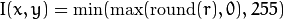

Introduction¶
OpenCV (Open Source Computer Vision Library: http://opencv.org) is an open-source BSD-licensed library that includes several hundreds of computer vision algorithms. The document describes the so-called OpenCV 2.x API, which is essentially a C++ API, as opposite to the C-based OpenCV 1.x API. The latter is described in opencv1x.pdf.
OpenCV has a modular structure, which means that the package includes several shared or static libraries. The following modules are available:
- core - a compact module defining basic data structures, including the dense multi-dimensional array
Matand basic functions used by all other modules.- imgproc - an image processing module that includes linear and non-linear image filtering, geometrical image transformations (resize, affine and perspective warping, generic table-based remapping), color space conversion, histograms, and so on.
- video - a video analysis module that includes motion estimation, background subtraction, and object tracking algorithms.
- calib3d - basic multiple-view geometry algorithms, single and stereo camera calibration, object pose estimation, stereo correspondence algorithms, and elements of 3D reconstruction.
- features2d - salient feature detectors, descriptors, and descriptor matchers.
- objdetect - detection of objects and instances of the predefined classes (for example, faces, eyes, mugs, people, cars, and so on).
- highgui - an easy-to-use interface to video capturing, image and video codecs, as well as simple UI capabilities.
- gpu - GPU-accelerated algorithms from different OpenCV modules.
- ... some other helper modules, such as FLANN and Google test wrappers, Python bindings, and others.
The further chapters of the document describe functionality of each module. But first, make sure to get familiar with the common API concepts used thoroughly in the library.
API Concepts¶
cv Namespace¶
All the OpenCV classes and functions are placed into the cv namespace. Therefore, to access this functionality from your code, use the cv:: specifier or using namespace cv; directive:
#include "opencv2/core/core.hpp"
...
cv::Mat H = cv::findHomography(points1, points2, CV_RANSAC, 5);
...
or
#include "opencv2/core/core.hpp"
using namespace cv;
...
Mat H = findHomography(points1, points2, CV_RANSAC, 5 );
...
Some of the current or future OpenCV external names may conflict with STL or other libraries. In this case, use explicit namespace specifiers to resolve the name conflicts:
Mat a(100, 100, CV_32F);
randu(a, Scalar::all(1), Scalar::all(std::rand()));
cv::log(a, a);
a /= std::log(2.);
Automatic Memory Management¶
OpenCV handles all the memory automatically.
First of all, std::vector, Mat, and other data structures used by the functions and methods have destructors that deallocate the underlying memory buffers when needed. This means that the destructors do not always deallocate the buffers as in case of Mat. They take into account possible data sharing. A destructor decrements the reference counter associated with the matrix data buffer. The buffer is deallocated if and only if the reference counter reaches zero, that is, when no other structures refer to the same buffer. Similarly, when a Mat instance is copied, no actual data is really copied. Instead, the reference counter is incremented to memorize that there is another owner of the same data. There is also the Mat::clone method that creates a full copy of the matrix data. See the example below:
// create a big 8Mb matrix
Mat A(1000, 1000, CV_64F);
// create another header for the same matrix;
// this is an instant operation, regardless of the matrix size.
Mat B = A;
// create another header for the 3-rd row of A; no data is copied either
Mat C = B.row(3);
// now create a separate copy of the matrix
Mat D = B.clone();
// copy the 5-th row of B to C, that is, copy the 5-th row of A
// to the 3-rd row of A.
B.row(5).copyTo(C);
// now let A and D share the data; after that the modified version
// of A is still referenced by B and C.
A = D;
// now make B an empty matrix (which references no memory buffers),
// but the modified version of A will still be referenced by C,
// despite that C is just a single row of the original A
B.release();
// finally, make a full copy of C. As a result, the big modified
// matrix will be deallocated, since it is not referenced by anyone
C = C.clone();
You see that the use of Mat and other basic structures is simple. But what about high-level classes or even user data types created without taking automatic memory management into account? For them, OpenCV offers the Ptr<> template class that is similar to std::shared_ptr from C++ TR1. So, instead of using plain pointers:
T* ptr = new T(...);
you can use:
Ptr<T> ptr = new T(...);
That is, Ptr<T> ptr encapsulates a pointer to a T instance and a reference counter associated with the pointer. See the
Ptr
description for details.
Automatic Allocation of the Output Data¶
OpenCV deallocates the memory automatically, as well as automatically allocates the memory for output function parameters most of the time. So, if a function has one or more input arrays (cv::Mat instances) and some output arrays, the output arrays are automatically allocated or reallocated. The size and type of the output arrays are determined from the size and type of input arrays. If needed, the functions take extra parameters that help to figure out the output array properties.
Example:
#include "cv.h"
#include "highgui.h"
using namespace cv;
int main(int, char**)
{
VideoCapture cap(0);
if(!cap.isOpened()) return -1;
Mat frame, edges;
namedWindow("edges",1);
for(;;)
{
cap >> frame;
cvtColor(frame, edges, CV_BGR2GRAY);
GaussianBlur(edges, edges, Size(7,7), 1.5, 1.5);
Canny(edges, edges, 0, 30, 3);
imshow("edges", edges);
if(waitKey(30) >= 0) break;
}
return 0;
}
The array frame is automatically allocated by the >> operator since the video frame resolution and the bit-depth is known to the video capturing module. The array edges is automatically allocated by the cvtColor function. It has the same size and the bit-depth as the input array. The number of channels is 1 because the color conversion code CV_BGR2GRAY is passed, which means a color to grayscale conversion. Note that frame and edges are allocated only once during the first execution of the loop body since all the next video frames have the same resolution. If you somehow change the video resolution, the arrays are automatically reallocated.
The key component of this technology is the Mat::create method. It takes the desired array size and type. If the array already has the specified size and type, the method does nothing. Otherwise, it releases the previously allocated data, if any (this part involves decrementing the reference counter and comparing it with zero), and then allocates a new buffer of the required size. Most functions call the Mat::create method for each output array, and so the automatic output data allocation is implemented.
Some notable exceptions from this scheme are cv::mixChannels, cv::RNG::fill, and a few other functions and methods. They are not able to allocate the output array, so you have to do this in advance.
Saturation Arithmetics¶
As a computer vision library, OpenCV deals a lot with image pixels that are often encoded in a compact, 8- or 16-bit per channel, form and thus have a limited value range. Furthermore, certain operations on images, like color space conversions, brightness/contrast adjustments, sharpening, complex interpolation (bi-cubic, Lanczos) can produce values out of the available range. If you just store the lowest 8 (16) bits of the result, this results in visual artifacts and may affect a further image analysis. To solve this problem, the so-called saturation arithmetics is used. For example, to store r, the result of an operation, to an 8-bit image, you find the nearest value within the 0..255 range:

Similar rules are applied to 8-bit signed, 16-bit signed and unsigned types. This semantics is used everywhere in the library. In C++ code, it is done using the saturate_cast<> functions that resemble standard C++ cast operations. See below the implementation of the formula provided above:
I.at<uchar>(y, x) = saturate_cast<uchar>(r);
where cv::uchar is an OpenCV 8-bit unsigned integer type. In the optimized SIMD code, such SSE2 instructions as paddusb, packuswb, and so on are used. They help achieve exactly the same behavior as in C++ code.
Note
Saturation is not applied when the result is 32-bit integer.
Fixed Pixel Types. Limited Use of Templates¶
Templates is a great feature of C++ that enables implementation of very powerful, efficient and yet safe data structures and algorithms. However, the extensive use of templates may dramatically increase compilation time and code size. Besides, it is difficult to separate an interface and implementation when templates are used exclusively. This could be fine for basic algorithms but not good for computer vision libraries where a single algorithm may span thousands lines of code. Because of this and also to simplify development of bindings for other languages, like Python, Java, Matlab that do not have templates at all or have limited template capabilities, the current OpenCV implementation is based on polymorphism and runtime dispatching over templates. In those places where runtime dispatching would be too slow (like pixel access operators), impossible (generic Ptr<> implementation), or just very inconvenient (saturate_cast<>()) the current implementation introduces small template classes, methods, and functions. Anywhere else in the current OpenCV version the use of templates is limited.
Consequently, there is a limited fixed set of primitive data types the library can operate on. That is, array elements should have one of the following types:
- 8-bit unsigned integer (uchar)
- 8-bit signed integer (schar)
- 16-bit unsigned integer (ushort)
- 16-bit signed integer (short)
- 32-bit signed integer (int)
- 32-bit floating-point number (float)
- 64-bit floating-point number (double)
- a tuple of several elements where all elements have the same type (one of the above). An array whose elements are such tuples, are called multi-channel arrays, as opposite to the single-channel arrays, whose elements are scalar values. The maximum possible number of channels is defined by the
CV_CN_MAXconstant, which is currently set to 512.
For these basic types, the following enumeration is applied:
enum { CV_8U=0, CV_8S=1, CV_16U=2, CV_16S=3, CV_32S=4, CV_32F=5, CV_64F=6 };
Multi-channel (n-channel) types can be specified using the following options:
CV_8UC1...CV_64FC4constants (for a number of channels from 1 to 4)CV_8UC(n)...CV_64FC(n)orCV_MAKETYPE(CV_8U, n)...CV_MAKETYPE(CV_64F, n)macros when the number of channels is more than 4 or unknown at the compilation time.
Note
CV_32FC1 == CV_32F, CV_32FC2 == CV_32FC(2) == CV_MAKETYPE(CV_32F, 2), and CV_MAKETYPE(depth, n) == (depth&7) + ((n-1)<<3). This means that the constant type is formed from the depth, taking the lowest 3 bits, and the number of channels minus 1, taking the next log2(CV_CN_MAX) bits.
Examples:
Mat mtx(3, 3, CV_32F); // make a 3x3 floating-point matrix
Mat cmtx(10, 1, CV_64FC2); // make a 10x1 2-channel floating-point
// matrix (10-element complex vector)
Mat img(Size(1920, 1080), CV_8UC3); // make a 3-channel (color) image
// of 1920 columns and 1080 rows.
Mat grayscale(image.size(), CV_MAKETYPE(image.depth(), 1)); // make a 1-channel image of
// the same size and same
// channel type as img
Arrays with more complex elements cannot be constructed or processed using OpenCV. Furthermore, each function or method can handle only a subset of all possible array types. Usually, the more complex the algorithm is, the smaller the supported subset of formats is. See below typical examples of such limitations:
- The face detection algorithm only works with 8-bit grayscale or color images.
- Linear algebra functions and most of the machine learning algorithms work with floating-point arrays only.
- Basic functions, such as
cv::add, support all types.- Color space conversion functions support 8-bit unsigned, 16-bit unsigned, and 32-bit floating-point types.
The subset of supported types for each function has been defined from practical needs and could be extended in future based on user requests.
InputArray and OutputArray¶
Many OpenCV functions process dense 2-dimensional or multi-dimensional numerical arrays. Usually, such functions take cpp:class:Mat as parameters, but in some cases it’s more convenient to use std::vector<> (for a point set, for example) or Matx<> (for 3x3 homography matrix and such). To avoid many duplicates in the API, special “proxy” classes have been introduced. The base “proxy” class is InputArray. It is used for passing read-only arrays on a function input. The derived from InputArray class OutputArray is used to specify an output array for a function. Normally, you should not care of those intermediate types (and you should not declare variables of those types explicitly) - it will all just work automatically. You can assume that instead of InputArray/OutputArray you can always use Mat, std::vector<>, Matx<>, Vec<> or Scalar. When a function has an optional input or output array, and you do not have or do not want one, pass cv::noArray().
Error Handling¶
OpenCV uses exceptions to signal critical errors. When the input data has a correct format and belongs to the specified value range, but the algorithm cannot succeed for some reason (for example, the optimization algorithm did not converge), it returns a special error code (typically, just a boolean variable).
The exceptions can be instances of the cv::Exception class or its derivatives. In its turn, cv::Exception is a derivative of std::exception. So it can be gracefully handled in the code using other standard C++ library components.
The exception is typically thrown either using the CV_Error(errcode, description) macro, or its printf-like CV_Error_(errcode, printf-spec, (printf-args)) variant, or using the CV_Assert(condition) macro that checks the condition and throws an exception when it is not satisfied. For performance-critical code, there is CV_DbgAssert(condition) that is only retained in the Debug configuration. Due to the automatic memory management, all the intermediate buffers are automatically deallocated in case of a sudden error. You only need to add a try statement to catch exceptions, if needed:
try
{
... // call OpenCV
}
catch( cv::Exception& e )
{
const char* err_msg = e.what();
std::cout << "exception caught: " << err_msg << std::endl;
}
Multi-threading and Re-enterability¶
The current OpenCV implementation is fully re-enterable. That is, the same function, the same constant method of a class instance, or the same non-constant method of different class instances can be called from different threads. Also, the same cv::Mat can be used in different threads because the reference-counting operations use the architecture-specific atomic instructions.
Help and Feedback
You did not find what you were looking for?- Ask a question on the Q&A forum.
- If you think something is missing or wrong in the documentation, please file a bug report.